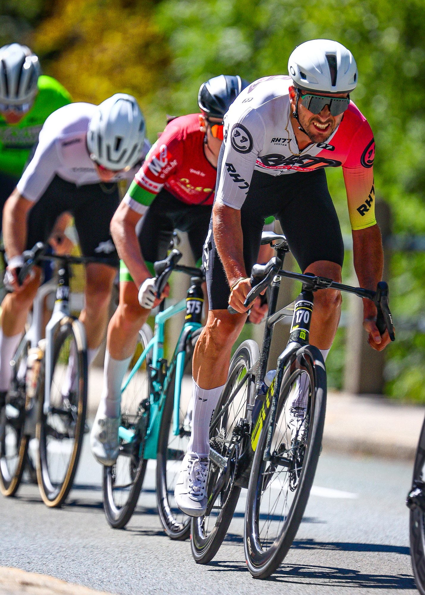
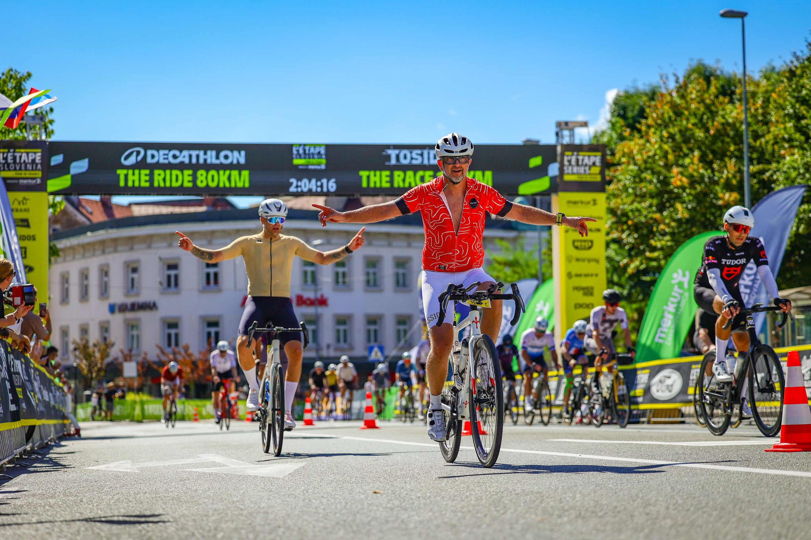
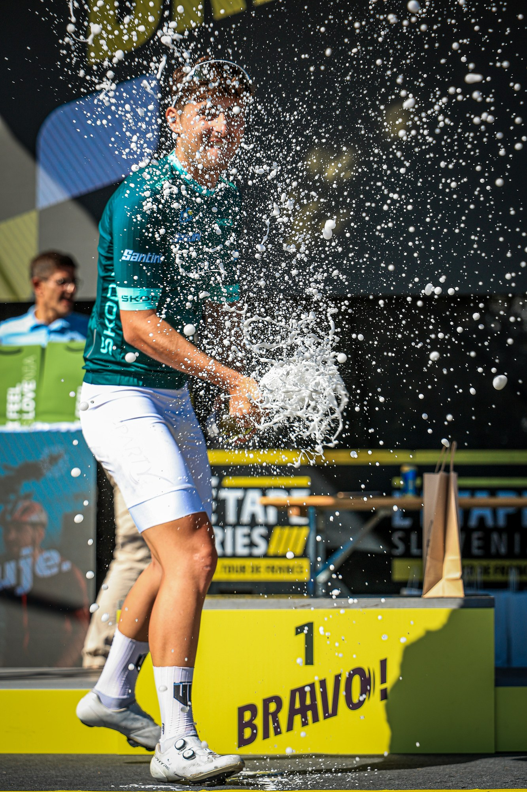

L’Étape Slovenia returned to Kranj for its fifth edition on Sunday, 6 September, bringing the atmosphere of the Tour de France to two closed-road courses through the Slovenian countryside.
Organisers reported a sold-out record field of 1,600 riders from 31 countries. The 80 km Decathlon The Ride and the 130 km Tosidos The Race started together at 09:00 before dividing onto their respective routes.

Emeršič wins a six-rider sprint
Marko Emeršič won the men’s 130 km race in 3:12:41.5, edging Johnny Hoogerland by four tenths of a second. Lubomir Murarik finished third in 3:12:42.7, with the first six riders separated by only 6.5 seconds.
Laura Šimenc Kramar controlled the women’s long race, winning in 3:24:04.4. Maja Mencigar placed second in 3:33:39.9 and Andrea Heged was third in 3:34:39.3. Šimenc Kramar also secured the women’s climbing and sprint classifications.

Mikac and Goropečnik lead the 80 km race
Patrik Mikac won the men’s 80 km race in 1:48:13.9, ahead of Niko Čuček in 1:52:25.7. Eva Goropečnik took the women’s title in 2:01:28.2, with Ana Špehonja second in 2:04:17.6.
The organiser’s course page lists 931 metres of climbing for the short route and 1,804 metres for the long route. Beyond the overall standings, riders also competed for Tour de France-style climbing, sprint and young-rider jerseys.

Heavy rain altered Saturday’s programme, moving the children’s races to Sunday and cancelling the family ride. Organisers said 250 young riders later took part in the Bodoči junaki races, while festival ambassador Matej Mohorič rode within the main event caravan.
Image Media coverage
Correspondents: Eduardo Castro, Paulo Nomade, Michael Rosa, Lucas Menezes, Adília Pinto and Claudio João
Photography: Claudio João, Eduardo Castro, Paulo Nomade and Adília Pinto / Image Media
Results and event details checked against official Timing Ljubljana and L’Étape Slovenia records.